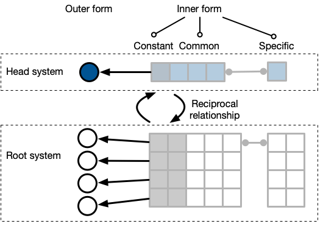
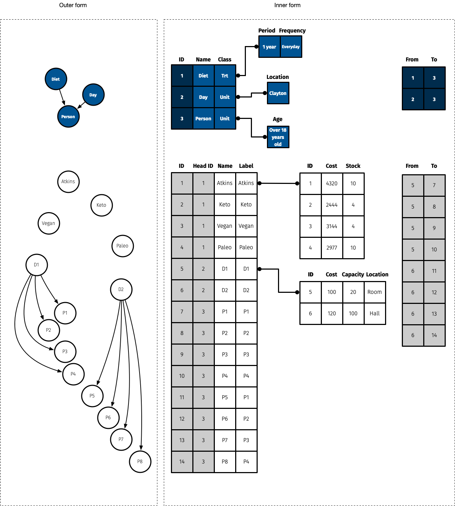

A factor graph shows a high order view of the relationship between the factors in the experiment. In the above figure, there are two treatment factors: irrigation and fertilizer. Irrigation treatment is applied to the mainplot and the fertilizer treatment is applied to the subplot. The arrow from mainplot node to the subplot node implies that the subplot is nested in the mainplot. The shape and color of the node correspond to the class of the factor (e.g. unit, treatment).
2 Grammar
Grammar makes language expressive. A language consisting of words and no grammar (statement = word) expresses only as many ideas as there are words. By specifying how words are combined in statements, a grammar expands a language’s scope.
– Wilkinson, 2005, The Grammar of Graphics, 2nd edition
In this chapter, I describe an object-oriented programming system called “the grammar of experimental designs” that is designed to capture elements of the origin of an experimental data encapsulated in a cognitive framework. The grammar of experimental designs is a term that is heavily influenced by Wilkinson (2005), who use the term “grammar of graphics” to describe an object-oriented system to create unlimited number of plots from following a relatively small number of rules. The grammar of graphics is adopted across many systems (Julia, Python, R, Tableau and so on) with its most popular interpretation (H. Wickham 2010) as the ggplot2 R-package (Hadley Wickham 2016). An overview of ggplot2 is given in Section 2.4. The grammar of experimental designs leverage aspects of the grammar of graphics for the visualisation of the experimental designs as discussed more extensively in Section 2.5.
Henceforth, “grammar” refers to the grammar of experimental designs unless explicitly stated otherwise.
2.1 Fundamental terminology
Section 1.1 describe the basic terminology used in the field of experimental design. We can, however, describe some terms more fundamentally by considering every categorised entity (physical or otherwise) involved in the experiment to be a factor in the design. The two primary roles of a factor are treatments and units; under this categorisation blocks, experimental units and observational units are all just units – the explicit role of the unit is determined implicitly by the relationship of the factors. For example, if a treatment factor is allocated to a plot factor, then the plot is an experimental unit.
In the grammar, a factor is an experimental variable manifested as an object with a dual structure: the “head system” and the “root system”. The head system characterizes the holistic attributes of the factor (e.g. the label “vaccine” for the treatment factor) and the root system is the constitution of the discrete factor levels such that it captures the idiosyncratic semantic features of each level that distinguish itself from other levels (e.g. labels “type A” and “type B” for the two types of vaccine treatment). Every root and head system has an outer form that is visible to the user (usually in the form of a vertex or a vector) and an inner form that are intrinsic characteristics of the outer form (e.g. id of the levels, the long name of the vaccines, dose level of each vaccine, etc). A factor can be physical (e.g. person, plot, animal and drug), metaphysical (e.g. gender, time and space) or intended response measures. There are three types of information in the inner form: constant, common and specific. The constant inner form is the set of variables that cannot be directly modififed by the user; this is generally the IDs of the nodes. The common inner form is the set of variables that are common across all factors, e.g. label and class of the node. The specific inner form are variables that are set of variables that are specific to the factor – these are stored in a separate table. The inner form is not usually exported in the final design table. In the system, every root system co-exists with a head system in a reciprocal relationship, i.e. any change in the root structure may be reflected as a change in head structure (and vice-versa). A schema of the factor structure is shown in Figure 2.1.

Every factor in the system is given an explicit role stored as a class in the inner quality of the head. The main roles are unit, treatment and record. The relationship between factors assigns an implicit role, e.g. treatment linked as a directed graph to a unit as seen in Table 2.1.
| A | B | \(A \rightarrow B\) relationship | Implicit role for B |
|---|---|---|---|
| unit | unit | B is nested in A | Nested unit |
| treatment | unit | B is applied to A | Experimental unit |
| record | unit | B is measured on A | Observational unit |
There are two orders of relationships in the system: the higher-order links between the factor nodes in the head system and the lower-order links between the level nodes in the root system. A higher-order link is created by explicit specification by the user and depending on how it is defined, the system creates the lower-order links between the root nodes with some constraint as prescribed by their explicit role and other user inputs.

In the grammar, an intermediate construct of the experimental design is stored as an object that contain two types of directed graphs, \(G_F = (V(G_F), E(G_F))\) and \(G_L = (V(G_L), E(G_L))\), where \(V(G_F)\) and \(V(G_L)\) are sets of vertices and \(E(G_F)\) and \(E(G_L)\) are sets of edges. We refer \(G_F\) and \(G_L\) as factor graph and level graph, respectively. In the factor graph, every factor is represented as a single vertex. Every factor has a finite number of levels and each of these levels is represented as a single vertex in the level graph.
The above figure shows the level graph. The nodes of the same color are the levels of the same factor (e.g. all yellow nodes correspond to the levels of the unit, subplot). The shape of the node correspond to the class of the corresponding factor.
Table (tab:exam-table?) shows an example of an illustrative experiment that tests the exam score on a different exam time allocation for two different subjects. In such an experiment, the observational unit may be specified as the combination of Subject-Student, i.e. an observational unit can only be uniquely identified by using information across multiple factors. In the grammar, a factor cannot be implicitly assumed from other factors. This restriction means, for example, that a new factor, like Exam Booklet, which uniquely identifies every Subject-Student combination must be specified in the system. This restriction is not only for the purpose of internal graph representation but forces the user to confront what the observational units actually are. Naming things are hard, but without naming things, it can be hard to create a shared understanding about the experimental structure.
| Exam Booklet | Subject | Student | Exam Time | Score |
|---|---|---|---|---|
| 1 | Math | 1 | Morning | 58 |
| 2 | Science | 1 | Afternoon | 90 |
| 3 | Math | 2 | Afternoon | 39 |
| 4 | Science | 2 | Morning | 80 |
2.2 An edibble graph
An edibble graph, or edbl_graph object, is a special type of directed graph. This form is used to represent intermediate constructs of the experimental design.
In a factor graph:
- a vertex is a variable,
- an edge is a high-level connection between two variables, and
- the direction of an edge defines a relationship based on which two variables it is connecting. Say if we have two nodes named A and B with a directed edge starting from A to B, then the meaning of the relationship follows from Table 2.1. If the combination is not listed below then the nodes cannot have a direct relationship.
As an example, consider a split-plot design that contains 4 main plots with 2 sub plots within each main plot (so 8 subplots in total). There are 2 treatment factors: fertilizer (with levels A and B) and variety (with levels V1 and V2). Each level of the fertilizer is randomly applied to two main plots. Each level of variety is randomly applied to one sub plot within each main plot. Two responses are planned to be measured on the sub plots: yield and height.
In a level graph:
- a vertex is a level,
- an edge is a direct connection between two levels, and
- the direction of an edge defines the same relationship as for high-level view, except if the edge is connecting nodes of levels of the same unit variable then it represents the sequence order of the levels.
The whole edibble graph object contains all the nodes and edges from the high- and low-level views. The whole edibble graph can have numerous nodes and edges, even when the number of units are small, that it’s visualisation will be too cluttered to be any useful. Consequently, when visualising these intermediate construct of the experimental design, only a high- or low-level view is visible to the user, but the object contains the information seen in both views.
2.3 An edibble table (or data frame)
An edibble, or edbl_table object, is a special class of tibble. The word “edibble” itself already implies that it is a table so appending the word with table or data frame seems superfluous. However, edibble can refer to the package, object, or used as an adjective to other objects, so appending edibble with table or data frame is to make explicit emphasis it refers to the edbl_table object, otherwise the reader is expected to infer its meaning by context.
An edbl_table was originally called edbl_df following convention from tibble but I decided to break away from this since other edibble components are graph and design, so a two letter word felt too short in contrast.
An edibble data frame is produced when the variables can be laid out in a tidy data format. An edibble is constructed from two possible ways:
- converting edibble graph to edibble using
serve_tableand - converting existing data frame to edibble using
edibble.